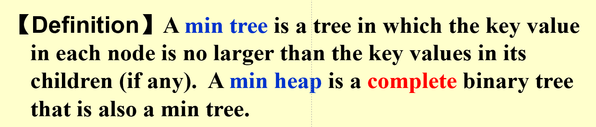

DS
教材¶
《Data Structures and Algorithms Analysis in C》
成绩构成¶
- 作业 10%
- 小测 10%
- 期中 15%(冬学期第二周)
- 期末 40% (皆为单独命题考试，内容以PPT为主)
- 大作业 30% (Hard，互评50%，助教50%)
大作业提交¶
交两次，第一次在PR中互评，第二次在final中交给助教
01 What to analyze¶
Time & Space complexity(machine & complier dependent)
- T_{avg}(N)\enspace\& \enspace T_{worst}(N)
定义¶
- T(N) = O(f(N)) : if there are positive constants c and n0 such that T (N) \leq c \cdot f (N) for all N \geq n_0. (即上界)
- T(N) = \Omega(g(N)) : if there are positive constants c and n0 such that T (N) \geq c \cdot g (N) for all N \leq n_0. (即下界)
- T(N) = \Theta(h(N)) : if there are positive constants c and n0 such that T (N) = c \cdot h (N) for all N = n_0. (即确定性的算法，如if)
- T(N) = o(p(N)) : if there are positive constants c and n0 such that T (N) \geq c \cdot p (N) for all N \leq n_0. (无限接近不等于)
运算法则¶
- 相加：取最大
- 相乘：相乘
- 当T(N)为k阶多项式时,T(N) = \Theta(N^k)
- log_k N = O(N)，对任意的k
一般规则¶
- for循环：T = 循环内部的代码 * 循环次数
- 嵌套for循环：循环内部的代码 * 每一层循环的次数的乘积
- 顺序执行的代码：由最大的决定
- 分支语句：T = 条件判断 + 两个分支中较大的那个
if (condition) S1
else s2
- 递归： (\frac{3}{2})^2 \leq Fib(N) \leq (\frac{5}{2})^n
分治法¶
将一个n的方法变为\frac{n}{2}的方法
02 列表，栈，队列¶
抽象数据类型（ADT）¶
Data Type = { Objects } + { Operations }
List¶
- 数组实现
- 链表
dummy node：头结点，不存储数据，只是为了方便操作（即表头）
栈：LIFO¶
-
操作：Push（进栈），Pop（出栈），Top
从空栈中pop，或者向满栈push，都会导致出错（仅在数组实现时产生）
-
栈实现
- 减少free和malloc：设置recycle bin
-
应用之一：括号匹配
-
用栈实现，遇到左括号入栈，遇到右括号出栈，最后栈空则匹配成功
-
应用之二：计算器实现
用栈实现，将中缀表达式转换为后缀表达式->计算后缀表达式
- 表达式转换：运算符入栈
读入优先级\geq原先优先级：入栈
关于括号：左括号在入栈前优先级最高，在入栈后优先级最低
- 表达式转换：运算符入栈
-
应用之三：函数调用
队列：FIFO¶
- 操作：Enqueue（入队），Dequeue（出队），Front（头，出队），Rear（尾，入队）
- 循环队列：用数组实现，头尾相接，头指针指向队头，尾指针指向队尾的下一个位置
- 判断循环队列是否已存满：
- 使用size变量
- 使用一个空间作为标记
03 树¶
一、属性¶
- degree of a node ::= number of subtrees of the node. For example, degree(A) = 3, degree(F) = 0.(For a binary tree, degree of a node is either 0 or 1 or 2.)
- degree of a tree ::= maximum degree of all nodes in the tree. For example, degree(T) = 3.
- parent ::= 有子树的节点
- child ::= 有父节点的节点（母节点的子树的根）
- sibling ::= 具有同一母节点的节点
- leaf ::= 没有子树的节点
- path ::= 从一个节点到另一个节点的路径（唯一）
- length of a path ::= number of edges on the path
- depth of a node ::= length of the path from the root to the node,Depth(root) = 0
- height of a node ::= length of the longest path from the node to a leaf
- ancestors of a node ::= all nodes on the path from the root to the node
- descendants of a node ::= all nodes on the path from the node to a leaf
二、实现（链表）¶
三、树的遍历（四种）¶
- Preorder：先访问根
- Postorder：最后访问根
- Level-order
- Inorder：最先访问根
#### 1. 性质- 叶的顺序不变
- 任何数都可以转换成一个二叉树（见PPT04P06）
四、Threaded Bindary Trees¶
Thread == Ture:原来是一个空指针 - 为每个节点添加一个线索，指向中序遍历的后继节点 - 为每个节点添加一个线索，指向中序遍历的前驱节点
五、Properties of Binary Trees¶
- For any nonempty binary tree, n0 = n2 + 1 where n0 is the number of leaf nodes and n2 the number of nodes of degree 2. （n0为叶节点数，n2为度为2的节点数，即有两个子树的节点）
六、Binary Search Tree¶
正序：increasing order
- 性质
- 左子树的所有节点的值均小于根节点的值，右子树的所有节点的值均大于根节点的值
- 键值全为整数且不同
- For find operation:T(N) = O(d),d is the depth of the tree
- Insertion
- Delete
- Delete a leaf:Reset its parent link to NULL
- Deleta a degree 1 node :Replace the node by its single child.
- degree 2 node :
Step1: Replace the node by the largest one in its left subtree or the smallest one in its right subtree.
Step2: Delete the replacing node from the subtree.
- Best case: O(logN) 全二叉树
- Worst case: O(N) 类似链表
七、树的种类¶
- 二叉树
- 满二叉树
- 完全(Complete)二叉树：除了最后一层，其他层都是满的，且最后一层的节点都靠左
04 堆 (Priotiry Queues)¶
一、操作¶
- 插入
- 删除
二、二分堆(Binary Heap == Binary Queue)¶
1.结构特性¶
- 完全二叉树
- 任意节点的值大于其子节点的值
- 任意节点的值小于其父节点的值
- 用数组实现
- 从1开始编号
- 对于某个节点：（若结果符合条件，否则就说明没有）
- 父节点编号为(对于某个节点)
- 左子节点编号为2i
- 右子节点编号为2i+1
2.顺序特性¶
 min tree:父节点小于等于子节点，最小在树根（注意这里左节点不一定小于右节点）
3.基础堆操作：基于上面的要求，完成目的¶
- Insert（向上置换）
- DeleteMin（向下置换）